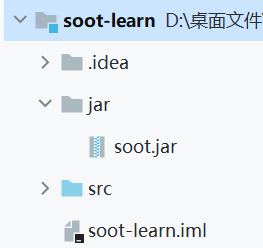
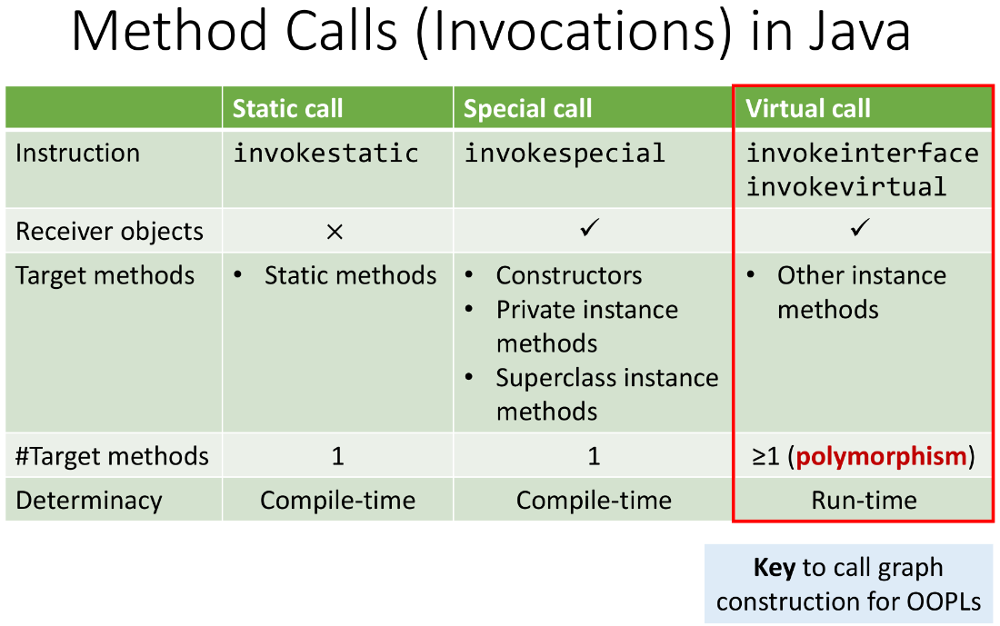
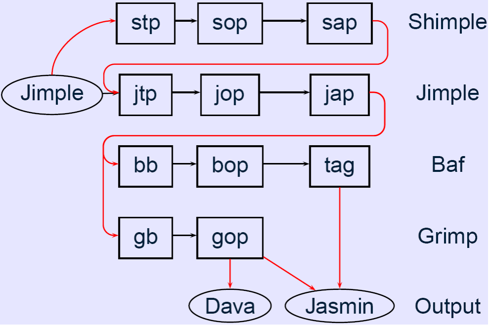
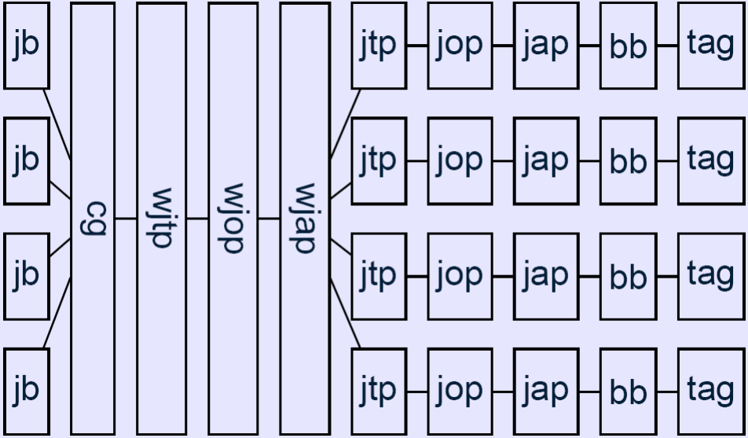
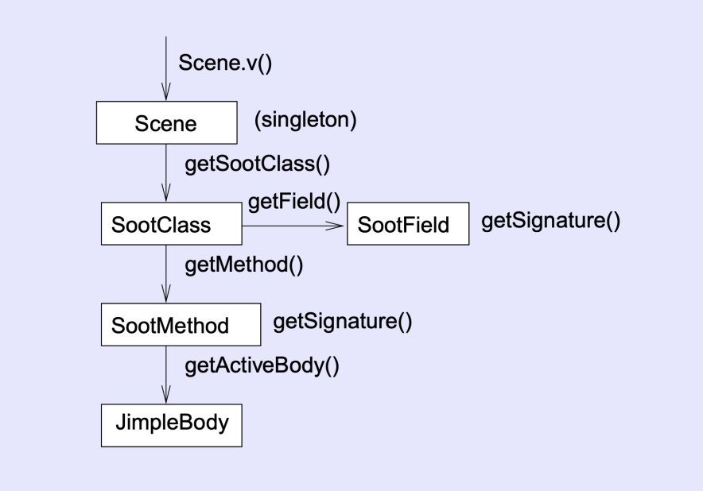
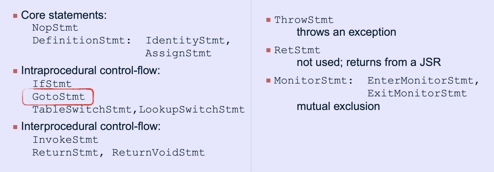
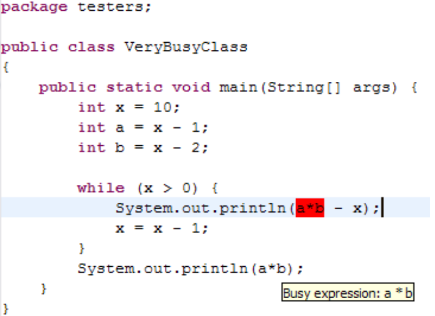

soot
SOOT 学习笔记¶
安装¶
默认装好了Java环境，JDK版本最好是1.8。然后可以分为两种方式来安装SOOT：
-
命令行使用SOOT：
直接访问 soot-4.3.0来下载jar文件,然后将其放在项目之中的某个目录之下。例如项目目录叫做soot-learn（之后默认在这个目录之下敲命令），就可以将其放于 soot-learn\jar 这个目录之下。当然也可以将这个jar文件重命名，比如我为了方便就直接换成soot.jar。

-
maven包管理工具添加
安装与配置maven环境可以查阅网上教程，如maven安装教程，然后新建或打开maven项目，在pom.xml之中的dependencies标签之内再添加
<dependency> <groupId>org.soot-oss</groupId> <artifactId>soot</artifactId> <version>4.2.1</version> </dependency>从而将soot代码导入项目。
简单运行¶
以下默认在soot-learn目录下操作：
-
输入
获得可选参数的信息。
-
在src目录下新建一个helloWorld.java，写一个“稍显复杂一点”的helloworld
-
输入
利用javac将其编译为.class文件。
-
输入
即可完成soot的运行,其中-f J表示我们想要得到jimple类型的文件，第二个-cp是指定要解析的.class文件的路径。soot的工作需要
java.lang.Object，使用-pp参数可以自动包含所需的jar文件。运行完之后在当前目录之下生成了sootOutput文件夹，其中有一个helloWorld.jimple文件。 -
打开这个文件，看到
public class helloWorld extends java.lang.Object { public void <init>() { helloWorld r0; r0 := @this: helloWorld; specialinvoke r0.<java.lang.Object: void <init>()>(); return; } public int add10(int) { int i0, $i1; helloWorld r0; r0 := @this: helloWorld; i0 := @parameter0: int; $i1 = i0 + 10; return $i1; } public static void main(java.lang.String[]) { java.io.PrintStream $r1; java.lang.String[] r2; helloWorld $r0; r2 := @parameter0: java.lang.String[]; $r0 = new helloWorld; specialinvoke $r0.<helloWorld: void <init>()>(); virtualinvoke $r0.<helloWorld: int add10(int)>(20); $r1 = <java.lang.System: java.io.PrintStream out>; virtualinvoke $r1.<java.io.PrintStream: void println(java.lang.String)>("hello world"); return; } }可以看到soot已经帮助我们把原来的代码变成了jimple格式的代码，其中jimple即java simple。仔细阅读可以发现代码逻辑与我们之前写的helloworld是一致的（这不废话吗），只是将代码变成了 三地址码 的形式。特别的，有如下几点可以注意：
-
变量名字之前带有$的就是soot额外引入的，帮助构建三地址码的变量，其他则是原程序之中的变量
-
method的参数以及this指针会用@来修饰。
-
对于函数调用会有不用类型的invoke前缀来修饰，共有如下三种。(图片摘自https://spa-book.pblo.gq/ch2/ch2)

-
Soot 框架使用¶
以下大部分内容取自sootGuide，但是这个资料已经是有点年岁了。。。所以部分内容有点过时。
code例子大部分取自soot-demo以及soot-tutorial或稍加修改。
soot的4种IR¶
soot一共支持4种IR（imtermediate representation），分别是:
- Baf:一种streamlined stack-based representation of bytecode
- Jimple:（最常用）
- Shimple: SSA(static single assignment )形式的jimple
- Grimp: Jimple的另一种变种，不再要求表达式树线性排布（也就是按照三地址码一条一条写下来），因此减少了一些中间变量，同时也引入了new这个operator
soot的执行流程¶
首先从 过程内分析 看起

这张图展示了Jimple代码的转化过程。soot是通过施加一系列的转换函数（也可以称为Pack）来将代码进行不断地变化，直到生成最后的目标结果。
每个Pack的命名都是有据可循的，第一个字母代表IR类型，例如j就表示jimple。第二个字母表示Pack在整个分析过程之中所扮演的角色，例如b代表body creation,o代表optimization, t代表user-defined transformation ,a代表annotation。最后一个字母p通常表示这是一个Pack。
图中黑色的线条是默认打开的，而红色的线条是通过添加编译选项可以打开的。我们可以通过添加自己定义的transformation函数来执行分析，例如在jtp之中添加一个pack，输出程序之中所有class 和method的名字等。
然后是 过程间分析 的流程,注意，我们需要添加编译选项-w来让soot启用这一流程：

这个流程与之前的稍有不同，首先是获取所有class的jimple body，然后依次调用几个新的pack:
- cg (call-graph generation)
- wjtp (whole Jimple transformation pack)
- wjap (whole Jimple annotation pack)
- wjop (whole Jimple optimization pack)，添加内联函数等优化，需要额外添加编译选项-W来启用
类似的我们也可以自定义分析方法wjtp添加到过程之中，并通过编译选项启用或停用某个pack。例如通过
来停用这个pack
或者获取当前所有启用的pack:
以及获知某个pack的信息：
当然涉及到添加自定义的pack等操作对我来说都太复杂了，我不会在命令行之中操作，而是自己编写程序，通过
PackManager.v().getPack("wjtp").add(new Transform("wjtp.mypta", new MyTransformer()));
soot.Main.main(new String[] {
"-w",
"-p", "wjtp.mypta", "enabled:true",
"-soot-class-path", classpath,
args[1]
});
这种方式来添加对应的编译选项（因为这个过程不只是涉及启用wjtp.mypta这个pack，还涉及要将这个pack加到wjtp这个大类之下，这个操作我不知道怎么用命令行实现。。。）
Soot的底层数据结构¶
以下是soot的基本数据结构：

scene存储全局的信息，sootclass存储某个class的分析信息，sootfield存储其中各个分量的信息，sootmethod存储其中各个方法，而每个方法可以生成一个jimple body。
特别的soot class可分为3类：
- argument class为我们自己写的程序入口，通过这个class来配置编译选项等并启动soot分析框架
- application class为待分析的java程序
- library class为soot库函数
具体接口调用样例如下：
new Transform("wjtp.myanalysis", new SceneTransformer() {
@Override
protected void internalTransform(String arg0, Map<String, String> arg1) {
Chain<SootClass> cs = Scene.v().getApplicationClasses();
System.out.println("size = "+cs.size());
for(SootClass c : cs){
System.out.println(c.getName());
List<SootMethod> ms = c.getMethods();//获得method
Chain<SootField> fs = c.getFields();//获得field
for (SootField f : fs) {
System.out.println(f.getDeclaration());
System.out.println(f.getType());
}
for (SootMethod m : ms) {
System.out.println(m.getDeclaration());
System.out.println(m.getReturnType());
System.out.println(m.getParameterTypes());
}
}
}
})
对于某个jimple body(jb)对象，我们可以调用getLocals()方法来获取其所有local变量（及之前提到的带有$前缀的变量），每个local变量的类也可以继承并重写Local类来实现。
jb对象还可以调用getUnits()方法来获得所有的Unit，每个unit就是jb之中的一条语句。而更细分的说，soot还可以分为15种具体的语句类型：

这些类型都继承了unit这个类。因此可以直接用instanceof来判断一条语句到底是identityStmt(表示变量是参数或者this等)类型，assignStmt类型(赋值语句)还是其他的什么类型。
具体接口调用样例如下：
new Transform("wjtp.myanalysis", new SceneTransformer() {
@Override
protected void internalTransform(String arg0, Map<String, String> arg1) {
SootClass mainClass = Scene.v().getMainClass();
System.out.println("Main class is "+ mainClass);
SootMethod mainMethod = Scene.v().getMainMethod();
System.out.println("Main method is "+ mainMethod);
System.out.println("Super class is "+mainClass.getSuperclass());
Body b = mainMethod.getActiveBody();
for (Unit u: b.getUnits()) {//获得units
System.out.println("Unit "+u);
}
for(Local l: b.getLocals()){//获得locals
System.out.println("Local "+l);
}
}
}
)
soot为了表示程序之中的data还引入了value接口，实现了这些接口的类有：
- Local 表示局部变量
- Constant 表示常量
- Expr(一类class) 表示各种运算，即给定若干value可以返回另一个value
- Ref(一类class) 表示各种引用，如之前提到的@parameter或者@this，以及a.f等
另一个非常重要的数据类型是Box，这可以看做指向数组的指针，根据其指向数据的类型可以分为unitbox以及valuebox。例如我们可能需要知道一条代表分支语句的unit接下来会走向哪些units，这时就可以调用getUnitBoxes()接口来获取这些对象。
如下是实现addExpr的一种方式：
public void foldAdds(Unit u)
{
Iterator ubIt = u.getUseBoxes().iterator();//获取unit之中的所有value对象
while (ubIt.hasNext())
{
ValueBox vb = (ValueBox) ubIt.next();
Value v = vb.getValue();
if (v instanceof AddExpr)//如果这个value对象是addExpr
{
AddExpr ae = (AddExpr) v;
Value lo = ae.getOp1(), ro = ae.getOp2();
if (lo instanceof IntConstant && ro instanceof IntConstant)
{
IntConstant l = (IntConstant) lo,
r = (IntConstant) ro;
int sum = l.value + r.value;
vb.setValue(IntConstant.v(sum));//通过指针vb设置对应value对象
}
}
}
}
关于这一节的内容可以见soot-datastructures
重写soot的数据流分析框架¶
前面已经提到过如何添加一个自己的transformer，实际上，我们也可以继承并重写soot的数据流分析框架，并应用到整个流程之中（即在自己重写的tranformer之中调用数据流分析框架）。
soot提供了三种基本的数据流分析框架：ForwardFlowAnalysis, BackwardFlowAnalysis and ForwardBranchedFlowAnalysis，前面两种对应课上所学的前向以及后向分析，最后一种可以看做前向分析之中，每个节点流出的信息携带对应的分支信息（感觉会和路径敏感有关，不过我也不太懂。。。），除此之外，还可以直接继承并重写它们的父类AbstractFlowAnalysis (the top one), FlowAnalysis or BranchedFlowAnalysis等，但一般没必要。
接下来就是依次重写各个方法，分别对应于数据流分析标准型之中的各个概念，以Live variable analysis为例：
public class LivenessAnalysis extends BackwardFlowAnalysis<Unit, Set<Local> >{
public LivenessAnalysis(DirectedGraph<Unit> graph) {
super(graph);
doAnalysis();//调用重写的method跑数据流分析标准型
}
@Override
protected void flowThrough(Set<Local> in, Unit unit, Set<Local> out) {
//节点转换函数
out.clear(); out.addAll(in);
for (ValueBox vb : unit.getDefBoxes()) {//kill集合
Value v = vb.getValue();
if (v instanceof Local)
out.remove((Local)v);
}
for (ValueBox vb : unit.getUseBoxes()) {//gen集合
Value v = vb.getValue();
if (v instanceof Local)
out.add((Local)v);
}
}
@Override
protected void copy(Set<Local> source, Set<Local> dest) {
//复制半格元素
dest.clear(); dest.addAll(source);
}
@Override
protected void merge(Set<Local> in0, Set<Local> in1, Set<Local> out) {//交汇操作
out.clear(); out.addAll(in0); out.addAll(in1);
}
@Override
protected Set<Local> newInitialFlow() {//除了entry节点之外的节点初始值
return new HashSet<Local>();
}
@Override
protected Set<Local> entryInitialFlow() {//entry节点的初始值
return newInitialFlow();
}
}
除了重写这些框架之外，我们还可以重写半格的元素,也就是Flow Set，在上面的分析之中半格的元素就是Set\<Local>，但是也可以实现一个类，继承BoundedFlowSet接口或者FlowSet接口（这二者的区别是我们是否知晓其所包含元素的全部可能情况）
soot也为我们实现了几种flow set: ArraySparseSet, ArrayPackedSet(实现了一个从int到集合元素的map,并用bitvector表示哪些集合元素是可用的), ToppedSet and DavaFlowSet可用。
soot提供的其它有用API¶
-
CFG（control flow graph）
我们知道数据流分析标准型需要进行在一个图之中，所以我们需要先得到一个CFG再喂给之前的数据流分析框架。soot实现了3种构建CFG的方式：BriefUnitGraph, ExceptionalUnitGraph and TrapUnitGraph。第一种是一种简单的方式，不需要考虑exception的情况，而后两者则需要考虑这些情况，但是其具体实现上还是有一些不同之处。
-
描述输出
通过getFlowBefore()和getFlowAfter()方法来获得每个节点在经历数据流分析前后的结果。
Body b = mainMethod.getActiveBody(); BriefUnitGraph g = new BriefUnitGraph(b);//构建CFG LivenessAnalysis la = new LivenessAnalysis(g);//将CFG传给之前重写的活跃变量分析 for (Unit u : b.getUnits()) { System.out.println(u); System.out.println(" Before: " + la.getFlowBefore(u)); System.out.println(" After: " + la.getFlowAfter(u)); } -
annotating code
可以在分析框架之中调用某些API（我懒得去找了~）为一些unit等对象添加某些tag或color等形式的”注释“，这样生成出来的代码（如jimple code）在安装了对应插件之后就可以为我们显示出来对应的注释，这常用于为我们直观地展示分析的结果。
这一过程通常对应于上文提到的jap等pack。
下面展示的是Eclipse之中对应的插件效果。

-
CG（call graph）
soot在开启了whole program mode之后，就可以允许我们获得整个程序的call graph(cg)，这里可以参见之前提到的Soot过程间分析流程,Pack cg会为我们完成这个分析。一种简单的方式是利用CHA(call hierarchy analysis)来获得程序的cg。
cg之中的每一条边都携带了丰富的信息，例如source method/statement，target method，edge type（边的类型就是之前提到的method call的几种类型）。
我们可以通过edgesInto(method), edgesOutOf(method) and edgesOutOf(statement)等接口来获得某个method/statement的出边或入边。这些接口返回一个edge的迭代器，通过类型转换可以将其指向的对象转化为我们想要的类型，如：
static public void printPossibleCallers(SootMethod target) { CallGraph cg = Scene.v().getCallGraph(); Iterator sources = new Sources(cg.edgesInto(target));//获取当前method的所有入边，也就是它的caller while (sources.hasNext()) { SootMethod src = (SootMethod)sources.next(); System.out.println(target + " might be called by " + src); } }迭代器所指向的对象可以被转换的类型共有三种：
- Sources iterates over source methods of edges.
- Units iterates over source statements of edges.
- Targets iterates over target methods of edges.
除此之外，还有两个method可用：
- ReachableMethods:返回从程序入口处开始，所有可达的方法，它会返回一个listener对象作为迭代器。
- TransitiveTargets:可以接受一个自定义的filter函数，然后返回符合其要求的method，例如可以获得某个method出发，所有可以被其直接或间接调用的方法。
-
指针分析
soot自带了两个指针分析框架SPARK以及Paddle两种分析框架，通常而言后者会更精确一些，但是也会更慢。因为软分大作业不让直接调库，所以就没有深入研究了~